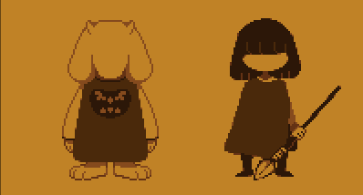
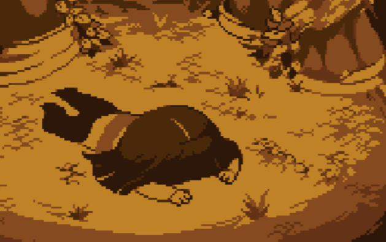
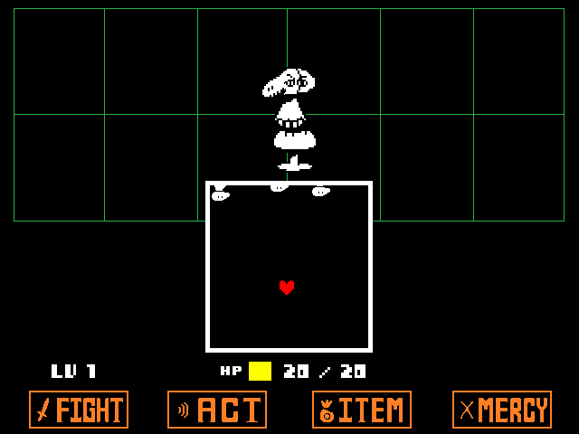

The Undertale
Wiki
The Undertale
Wiki ( Learning more about the game fills you with determination. )
( Learning more about the game fills you with determination. )
Main Story
Ancient History and the Fallen Child

The narrative of Undertale begins with an ancient legend: long ago, two races ruled over the Earth as equals: Humans and Monsters. However, a terrible war broke out between them, ending in a human victory. The monsters were subsequently banished to the Underground and sealed by a magical spell called The Barrier, a translucent wall that can only be entered—but never exited—by any being without a powerful SOUL. Many years later, in 201X, a human child climbs Mount Ebott, a place where legends say those who ascend never return, and accidentally falls through a hole into the heart of the Ruins.
The Journey Through the Underground
Upon falling, the protagonist is rescued from the malevolent, sentient flower Flowey by Toriel, the kind-hearted guardian of the Ruins. As the journey unfolds, the player learns a grim reality: the child is not the first to fall. Six other humans had previously descended into the Underground, and each was captured by King Asgore Dreemurr. To break the Barrier and wage war against humanity once more, Asgore requires seven human SOULS, meaning the protagonist is the final piece needed for his plan. As the player travels through diverse biomes (the snowy woods of Snowdin, the serene caverns of Waterfall, and the technological heat of The Core) they are hunted by the Royal Guard, led by the fierce Undyne, while being observed by the mysterious skeleton brothers, Sans and Papyrus.

The Royal Legacy and the Prophecy
The plot deepens as the player interacts with the Royal Scientist Alphys and her robot creation Mettaton, eventually uncovering the tragic history of the Royal Family. It is revealed that the first human who fell years ago was adopted by Asgore and Toriel, but their untimely death, along with the death of the King's son, Asriel, became the catalyst for the current conflict and the creation of Flowey. According to an ancient prophecy, an "Angel" who has seen the surface will eventually return to empty the Underground—either by freeing the monsters through mercy or by wiping them out entirely.
The Power of Determination
What makes Undertale's story truly unique is its meta-narrative, where the player's interface is part of the lore. The ability to save the game and restart is canonically treated as a power called Determination, possessed only by humans. Because of this, characters like Sans and Flowey are aware of "timelines", and the game frequently breaks the fourth wall to comment on the player's morality. Whether you choose to be a Pacifist, befriending everyone, or a Genocide seeker, systematically erasing the population, the game remembers your choices, ensuring that every action has a permanent weight on the fate of the Underground.
Gameplay: The Bullet-Hell Hybrid

Unusual RPG turn-based
- Defense (The SOUL): When it is the enemy's turn, the player controls a small red heart (their SOUL) within a bullet-box. You must dodge various projectile patterns—ranging from literal bullets to bones, spears, and music notes—in a fast-paced "bullet-hell" style.
- Offense (FIGHT): Players can use timed hits to deal damage, similar to classic RPGs.
- Interaction (ACT & MERCY): This is the game's core innovation. Instead of fighting, players can ACT to interact with monsters (e.g., complimenting, joking, or ignoring them). Once a monster's specific emotional needs are met, their name turns yellow, allowing the player to SPARE them and end the fight without bloodshed.
Game Mechanics
The Weight of Choice: LV and EXP
- EXP (Execution Points): In this world, EXP is not "experience" in the traditional sense, but a way of quantifying the pain you have inflicted on others.
- LV (Level of Violence): Your "Level" represents your capacity to hurt and distance yourself from others.
The Routes
Your choices matter more than you think
- True Pacifist: Achieved by befriending everyone and killing no one. This leads to the most emotional and complete ending.
- Neutral: The standard experience where some monsters may die and others live, resulting in various phone calls from the characters based on your specific actions.
- Genocide (No Mercy): A haunting path where the player systematically exhausts the kill count in every area. The game becomes harder, the music turns somber, and the characters treat you like a true villain.
The game remembers what you do, even if you reset or load an old save file. Characters like Flowey or Sans may comment on your previous lives, and the game files themselves are often part of the storytelling. For instance, if you complete the cruelest route and then attempt a "happy" run, the ending is permanently altered. The game "remembers" your past crimes, suggesting that some choices leave scars that not even a Reset can fully erase.
Hidden Secrets & Easter Eggs
W.D. Gaster
The most famous secret in the game revolves around the former Royal Scientist, W.D. Gaster, who reportedly fell into his own creation and was shattered across time and space. The Gray Door: If your "Fun" value is exactly 66, a mysterious gray door may appear in a hallway in Waterfall, leading to a silent sprite known as "Mystery Man." The Gaster Followers: NPCs with gray, distorted appearances can appear near elevators in Hotland, sharing cryptic fragments of Gaster's lore.
The Secret Boss: So Sorry
There is a hidden boss named "So Sorry" that can only be fought in the Art Club (a secret room in Hotland). How to find: You must reach the Art Club room while your computer's system clock is set to October 10th at 8:00 PM. He is a "tribute" character based on a fan's contribution during the game's Kickstarter.
Sans's Secret Workshop
Behind Sans and Papyrus's house in Snowdin, there is a locked door to a secret lab.
How to enter: You must speak to Sans in the final corridor multiple times across different "reloads" without saving. He will eventually give you a key to his room, where you can find a silver key to the Hidden Workshop. Inside, you'll find a mysterious machine, a photo of Sans with people you don't recognize, and a blueprint written in symbols (likely Wingdings).
Toby Fox (The Annoying Dog)
The creator of the game, Toby Fox, represents himself as a small white dog that constantly interferes with the characters.
The Developer's Room: If you complete the True Pacifist Credits without hitting a single name, a mysterious door in Snowdin will unlock. Inside, you find the "Annoying Dog" living in a messy room, symbolizing the game's developer.
Name Easter Eggs
When naming the "Fallen Child" at the start of the game, certain names trigger unique responses:
- "Frisk": This activates Hard Mode, which ends after the Ruins.
- "Gaster": The game immediately crashes and restarts.
- "Sans", "Toriel", or "Blooky": The game prevents you from using these names with a humorous message (e.g., "No." or "I think you should think of your own name").
- "Chara": Triggers the message: "The true name."
The Wrong Number Song
If your "Fun" value is between 2 and 39, you may receive a random phone call in the Snowdin dock area. A voice asks for someone whose name starts with "G," then realizes they have the wrong number and sings a short, catchy jingle called the "Wrong Number Song."